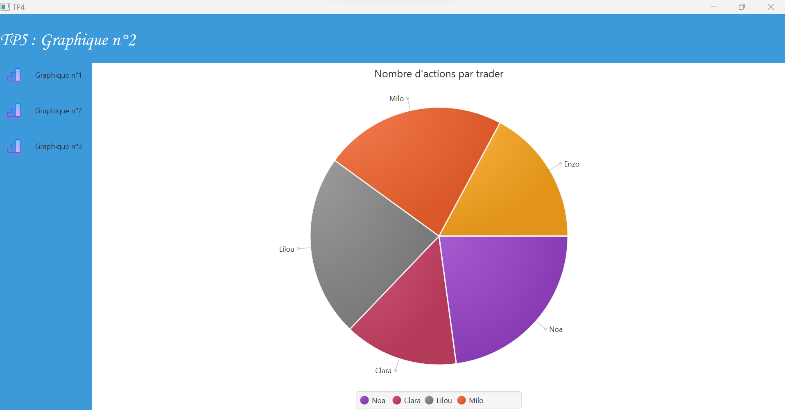

Tp graphique

Dans ce Tp, nous avons appris à faire des statistiques
- Objectif: Faire afficher plusieurs statistiques dans des graphiques. Nottament faire afficher le nombre d’actions par trader ainsi que le nom des traders en légende dans un graphique.
- Moyens: Scene builder pour l'interface et le logiciel IntelliJ pour coder
- Contraintes: Réaliser durant un cours
- Étapes: J'ai d'abord commencé à prendre connaissance de l'interface scene builder et j'ai ensuite codé
- Résultats: L'objectif du Tp a été réalisé. J'ai pu afficher dans un graphique le nombre d'actions par traders
- Explication de l'exercice
- Lien vers github